来源：https://ancab4z106.feishu.cn/docx/EDpbdIvsIohr4zxztiscfpL7nvh
做好内容端和转化端，一篇内容带来300+咨询，变现10W+。5月31日发布的视频，截至目前为止，该笔记引流到私域300+，客单价1500，成交66+人数，合计变现10w+，妥妥的低粉高变现内容。
hello，我是夕子，主业皮肤科医生，主要是改善各种问题性肌肤改善。副业小红书护肤博主，目前稳定每月10w+的营收利润。
本篇内容主要复盘下我为什么能一篇笔记带来300+的咨询，变现还不错。这篇小爆款，低粉高变现的笔记，有哪些可以复制的点，主要从制作内容以及转化端来复盘，希望给到大家一个思路。
按照以下内容分享：
内容端：
一：明确视频目的（小红书爆款要素：封面和标题）
二：内容框架搭建
2.1 回答我是谁，为什么有这个资格聊这个话题
2.2利他内容是什么或者说有啥干货？（黄褐斑朋友听了有什么收获？）
2.3 埋下钩子，让用户链接过来。
三：录制视频、发布、引流小细节
转化端：
一：微信后花园的搭建
二：私聊SOP形成
明确视频的目的：有黄褐斑的来找我领取资料，以及购买我的服务
这个思路跟数据好，吸引品牌方来投广告还是有差别的，类似资料号，我们需要的是一个个精准用户，注意非流量。流量不一定能转化，但精准用户转化率比较高（我这边转化率在10%左右，后面也会提为什么能转化。）
目标用户：目的对应的是目标用户（有黄褐斑的朋友），以及会以什么关键词搜索，在意谁讲，怎么解决。很简单的一个方式，我们直接在app上搜索“黄褐斑”关键词，选择视频（我做的是视频内容，如果你做图文，选图文即可），可以查看到一些数据还不错的内容。
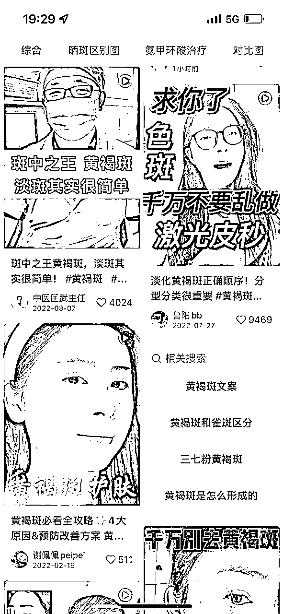
封面：提取关键词，黄褐斑，斑中之王，越来越严重等等。结合自己的经验，就选出了封面标题：万斑之王 黄褐斑 5做6不做
标题：跟黄褐斑说拜拜！5做6不做
做小红书内容，封面和标题是决定别人会不会进去的关键。大事搞好了，接下来就是内容框架了。
明确视频目的，接下来就是撰写视频脚本大纲，把一些关键点填上去，理顺后再做填充，这样一篇具有商业价值的文案就形成啦！
很显然，我的关键词是黄褐斑。自问如果自己有黄褐斑，想通过视频获取什么？（用户思维）
如果我是用户，我希望自己能获取到对我淡化黄褐斑有帮助的建议，如果有手把手教我祛黄褐斑再好不过了。
好啦，有了以上视频目的和用户思维，那就围绕这两个点去创作。我把自己创作视频的脚本拆解下。可以说每一句都有其目的。
视频脚本所需的内容：
对应文案：上周五在育儿群分享了5步跟黄褐斑说拜拜，吸引了54个黄褐斑朋友过来
备注：这里潜台词，你看我可以在育儿群做分享，且吸引了不少朋友过来链接我。我是有资格来讲这个话题的，加上我录制视频的背景是门诊，侧面提醒我是医生。
可优化的点：
1.1人物旁边可加上个人介绍，比如皮肤科学姐，已帮助1000+黄褐斑朋友改善皮肤问题（因我没做皮肤科医生认证，皮肤科学姐稳妥点。后面录制的视频有加上）
1.2服装可穿工作服，当天拍摄穿地太随意了。（先完成再完美）
对应文案：有些朋友没有来得及听，这个视频做个小总结，总结两个要点，黄褐斑5要做6不做，记得点赞收藏方便实操------
备注：潜台词就是你不在群里，没听到内容，不要紧，我总结给你听，带有数字5要做6不做，关心这个话题的就会认真听。
这些就是利她的内容。
内容：那些有黄褐斑又淡化的朋友，做对了什么呢？就是按照我上面的思路来，市面上很多产品，很多人不知道怎么选
我把给到黄褐斑搭配的内调外养方案放评论区，需要的找我要哈。
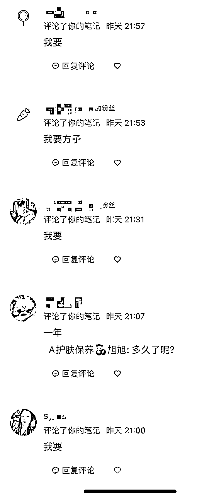
备注：一开始我想着找人帮忙底下留言求分享，等了1个多小时，发现有不少真实用户在留言。就没有人工干预。
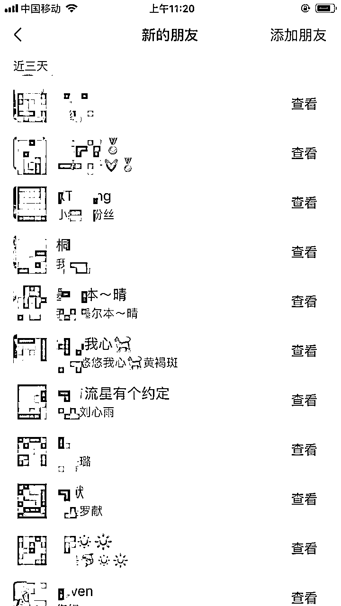
要发图片过去，需要用户关注。所以我会在引导她们关注+评论。这就形成了双向增强路线，关注+评论本身就会给这篇笔记带来流量。
截至目前为止，该篇笔记浏览在2.5w，点赞245，收藏289，评论337，还有不少朋友是直接进群或者私聊我要资料的。
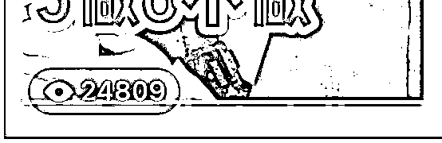
我把该内容重新换了个封面以及滤镜，继续发布了，发现还能继续转化。
包括整个内容框架修修改改又是一篇，我学员复用，也出结果了。
脚本准备好啦，接下来就是录制，有个简单快速录制方式，把脚本复制在美颜app（可开通的会员），这样就可以实现边录制脚本边滚动，一个视频10分钟内就可以录制好。
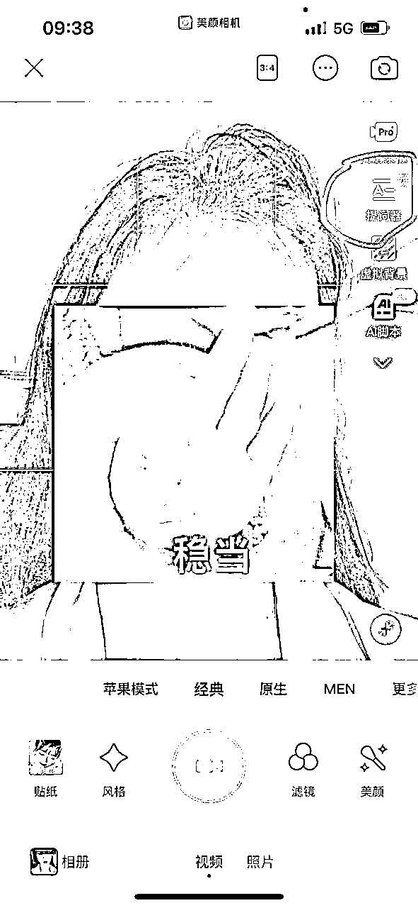
录制好的视频，可以交给外包人员。我现在用的剪辑是我的一个老顾客，以前面试过我的公众号编辑。一开始不会剪辑，我把自己剪辑的流程发给她，很快上手，现在剪辑地多了，比我剪辑还好。
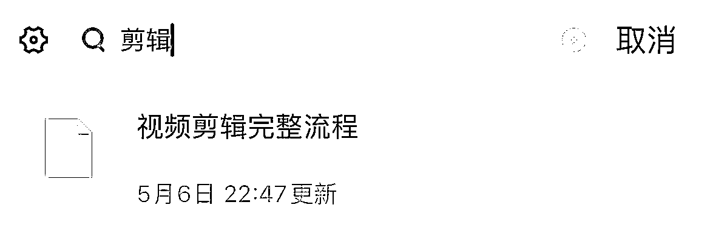
剪辑好之后就是发布内容，记得不要直接发布，点击我的——创作中心中找到适合的笔记灵感，点击去发布。一般有额外的50+曝光，多多曝光终究是好事，何况还是不要钱的那种。
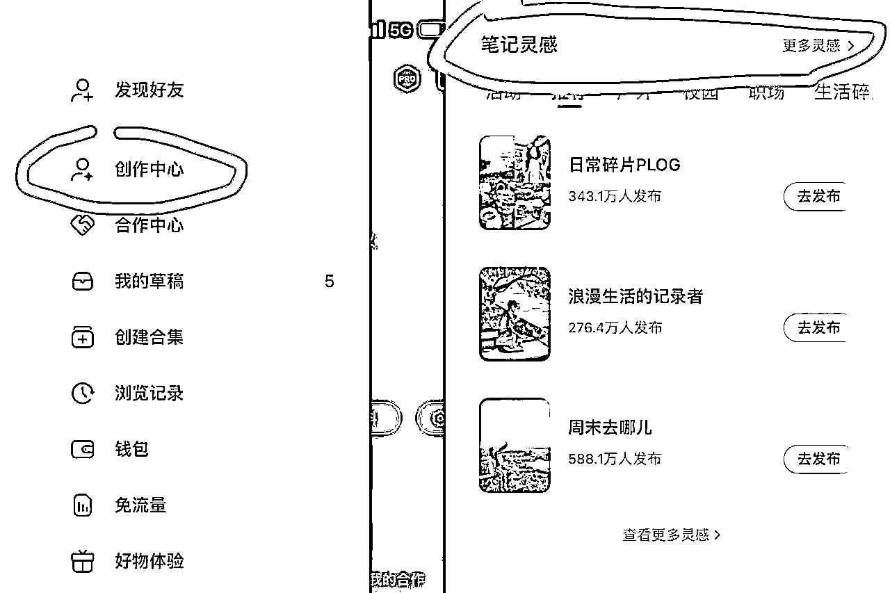
温馨提示，为了保护主号，最好引导用户进群，助理号发送联系方式！
截至目前为止，该笔记引流到私域300+，客单价1500，成交66+人数，合计变现10w+。
用户到了私域，单用户终身价值1w+，所以长期来看，该笔记变现超60w+。
人来到家门口，最终怎么能变现呢？这里有几个要点：
这个是我特别重视的，前几天招了些联创，带她们搞钱，我没有急着让她们去做小红书，而是先把店铺，先把后花园搭建好
简单来说就是头像、背景、个性签名以及朋友圈。朋友圈要持续发布，发专业、发案例、发日常、发感悟等等。
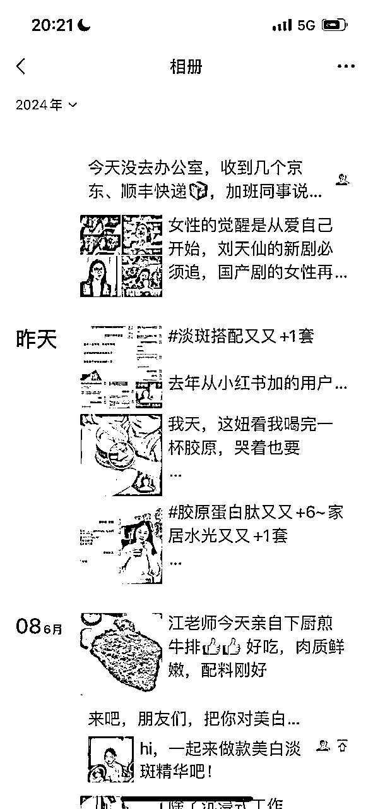
这是个长期活，新加的朋友刚开始都会想着看一眼对方的朋友圈。
这个sop其实我们也在不断测试，从免费咨询到付费咨询，现在又回到免费咨询1次
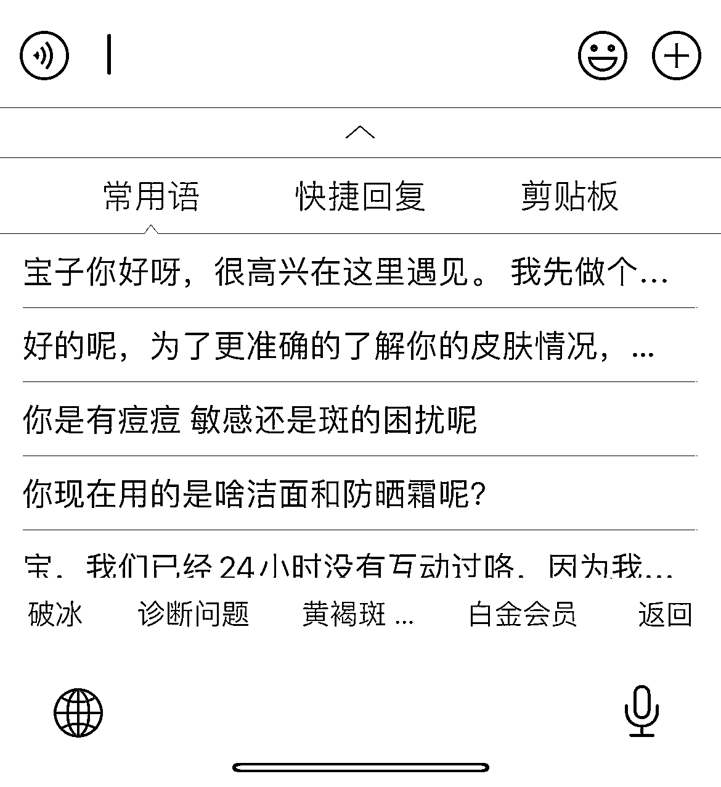
讯飞输入法是个好东西，把常用的话术分门别类放进去
最后出一套方案，涉及产品都是院线的，效果明确，已经积累了成千上万的案例。
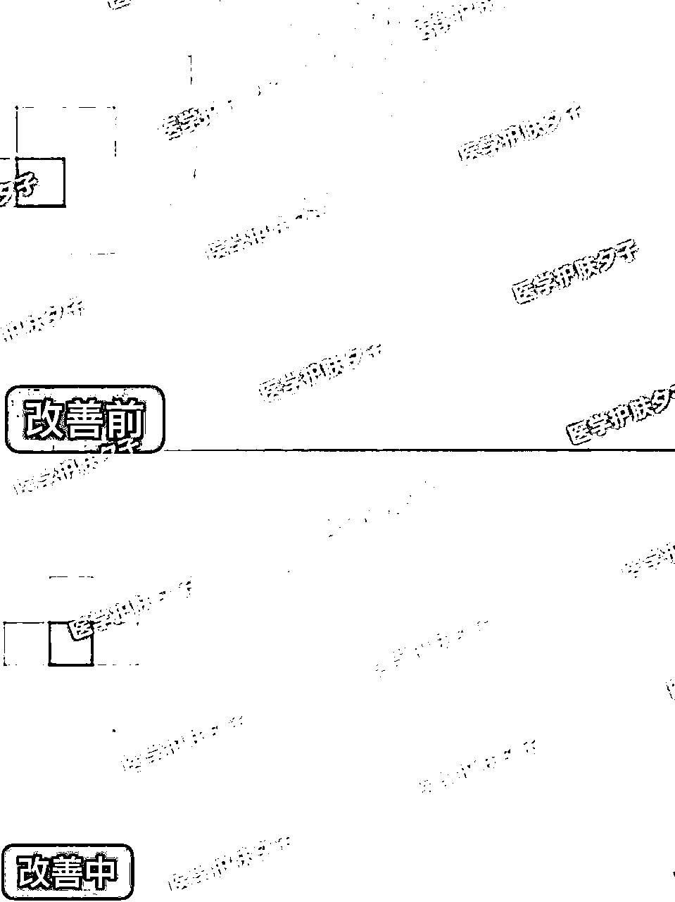
涉及的产品可以去旗舰店、医院以及我这边购买，我这边购买就免咨询费。发现90%的顾客付了咨询费都选择在我这边购买了。因为我这边比医院、旗舰店优惠些，很多想着能免个咨询指导费也是很划算的。
这篇笔记还成交了几个在国外的同胞，最远的是在芬兰。还有英国、澳洲等同胞。
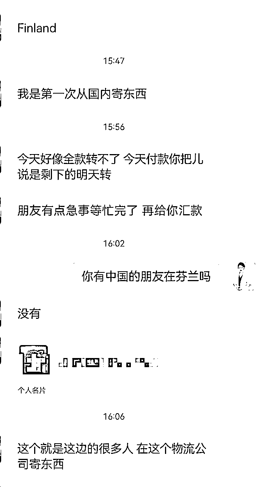
并且吸引了不少高端用户过来，原本就是高端院线的用户，选择了我这边。这是她的真实反馈！
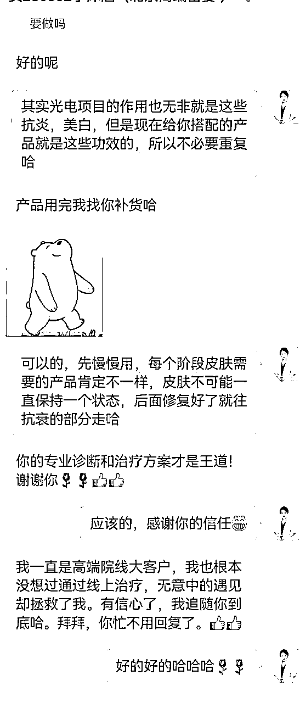
我们这边的服务跟市面上的优势：
1.有医学背景
2.搭配的是院线产品，效果明确的产品
3.一对一跟踪服务（要求顾客定期给反馈，这边也会定期回访）
好啦，以上就是夕子关于这篇高变现笔记的复盘，希望给各位圈友一点启发。有任何关于小红书变现以及美业变现相关的问题，欢迎交流。（微信：1058668249，备注来源哦）